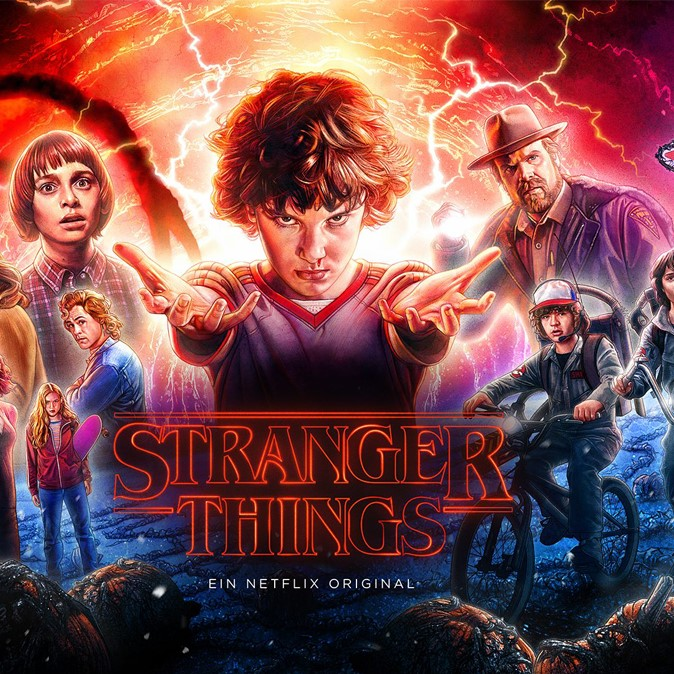

FRIENDS
Nowadays , TV series have been a major part of everyone's life. Especially, they are quite popular among college students. F.R.I.E.N.D.S. is a very famous American TV show created by David Crane and Marta Kauffman. Answer the questions correctly and show your interest towards this all time favourite show.

STRANGER THINGS
Stranger Things is an American science fiction-horror television series created, written, and directed by the Duffer Brothers. Define your thrilling experience of stranger things just by answering some very interesting questions based on your favourite tv series.
CRICKET
Cricket is the most loved and appreciated game of India. Be it a person of 10 or 80 , everyone is excited for a cricket match. Answer some of the basic questions based on cricket.
FOOTBALL
FIFA is on fire and so is the world. Questions related to sports that will highlight your keen interest towards this popular sport. Answer all the questions correctly and prove the love for football.
 FRIENDS
Nowadays , TV series have been a major part of everyone's life. Especially, they are quite popular among college students. F.R.I.E.N.D.S. is a very famous American TV show created by David Crane and Marta Kauffman. Answer the questions correctly and show your interest towards this all time favourite show.
FRIENDS
Nowadays , TV series have been a major part of everyone's life. Especially, they are quite popular among college students. F.R.I.E.N.D.S. is a very famous American TV show created by David Crane and Marta Kauffman. Answer the questions correctly and show your interest towards this all time favourite show.